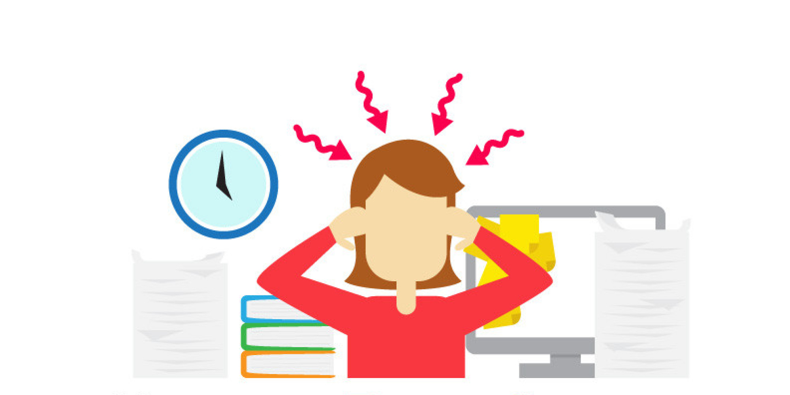

Includes 14 content items, starting with Unit 2 Summary, What is Stress?, What is a Stressor?.
Module Content
Lesson sequence
1
Reading
Unit 2 Summary
This unit examined the different body systems and how stress can affect each one. Stress can be detrimental to a person’s overall health, not just mental health. Coping strategies need to be in place so that a person is able to deal with stressful situations when they arise in life. Hopefully some of the relaxation techniques will help you find your next coping strategy!
2
Reading

What is Stress?
Stress is something that we have all felt at some point, but what causes us to feel it? You can probably name a few things that make you feel a little stressed right now, but have you ever wondered why these things make you feel that way?
The word stress is used to cover a wide range of behavioural reactions and emotions to events that are beyond the coping abilities of an individual. When the body starts to feel stress, the brain releases hormones throughout the body. These hormones send alarm signals that make our breathing and heart rate faster, and our muscles tense. This is what is known as the “fight, flight, or freeze” response.
Stress can be good in small amounts, helping to motivate and reach potential. Stress is also very individualized. For example, some people find driving in heavy traffic very stressful, but some people do not.
Continual stress can negatively affect an individual’s mental health. Ongoing stress can also affect bodily functions such as blood pressure. But, it is very important to note that stress is not a mental illness.
Check your current level of stress at Be Mindful.Keep track of your score so that you can compare your results after you finish this module.
3
Reading
What is a Stressor?
A stressor is something that is the cause of stress. The list of stressors is endless since everyone is different, but here are some ways that stress can affect your life.
Physical Environment
Uncomfortable and/or unsafe living conditions can cause stress. Events in this category could include traffic, noisy next door neighbors/pets, aches/pains, being frequently sick, or having sirens keeping you up at night.
Family and Relationships
This category revolves around healthy or unhealthy relationships. Events in this category could include disagreements, being rebellious, taking care of a family member that is ill or a child with special needs.
Work or School
Work or school can cause ongoing stress. This category can include things such as a workload that is exhausting, conflicts with others, being on the low end of the pay scale, or job dissatisfaction.
Life Events
Anything that happens in your life that is stressful. Events in this category can include financial pressure, different types of discrimination, or lack of a support network (isolation).
Major Life Changes
This includes anything that irreversibly changes your life and can be a positive or negative change. Events in this category can include a career change, divorce, having a baby, or moving to a new area.
4
Reading
Factors that Influence Stress
It is not only the stressor that affects your stress level; there are also factors that influence the level of stress experienced. This course will look at and explain four main factors.
1. Intensity
This is how ‘strong’ the stress is; the intensity can also change with context. For example, a dead cell phone battery is a relatively low stress situation when a person has access to a charger. However, the stress level can increase dramatically if a person is lost in the woods and has a dead cell phone battery.
2. Duration
This factor has to do with how long a particular stressor lasts. The longer a stressor is in a person’s life, the more impact it has on the person and their mental health.
3. Number
Refers to how many stressors a person is dealing with at a particular time. A certain stressor may not seem like anything particularly difficult to deal with, but paired with multiple other stressors, it can become overwhelming.
4. Coping Strategies
This factor has to do with how skilled a person is with their coping strategies, and how many actual strategies they have to utilize. The larger variety of strategies and abilities to use these strategies, the less impact the stress will have on the person.
5
Reading
Positive Stress
Stress is not always a bad thing. Stress is only how your body reacts to situations that are beyond your coping abilities. People tend to use the word “stress” to describe negative situations, but there is a difference between positive and negative stress.
Positive stress is called eustress. Eustress is the type of stress that motivates you, and it is actually perceived as something that is within our coping abilities. It is perceived this way because it is exciting and helps to improve our performance; these are factors that are anticipated. Eustress helps to focus our energy, but it is short-term.
According to Mental Helpsome examples of eustress are:
getting a raise/promotion at work
going on vacation
taking courses you are interested in or learning a new hobby
buying a home
moving
getting married
Watch the following video to learn more about positive stress:
Negative stress is what the majority of people think of when they hear the word “stress”. Negative stress is also called distress and is perceived to be outside of a person’s coping ability. Distress can be both short- and long-term and decreases performance. Ongoing distress may be the precipitant to anxiety, mental, or physical issues.
*Not everyone who is under distress will develop anxiety, mental, or physical issues. If you have concerns, consult a professional.
Some examples of distress are:
- Financial hardships - Death of a loved one - Sleep issues - Losing contact with a close friend/family member - Issues at school (bullying, low marks) - Being abused or neglected
(Credit: Mental Help)
Distress can also be internally caused.
Some examples of internal distress are:
- Fears or phobias (spiders, heights, being in public) - Cyclical or repetitive thought patterns - Constantly worrying about the future and "what if's" - Having unrealistic expectations (a perfectionist type of attitude—nothing will ever be good enough)
(Credit: Mental Help)
Finally, there are some things that people do in their daily lives that help to contribute to distress.
Some examples include:
- Overcommitting your time (not making enough "down time") - Not being assertive enough - Procrastination and not planning ahead
(Credit: Mental Help)
7
Reading
Self-Efficacy and Coping Skills
By now, you will have noticed that stress is very individualized. Some things that make you feel eustress may not make your friends feel the same way and vice versa.
One thing that has been shown to play a role in how stress is perceived is something called self-efficacy. The concept of self-efficacy was established by psychologist Albert Bandura, and it describes how much effect people believe they have on what happens to them.
For example, imagine two people are going to write a final exam in 30 minutes. Person A has not had many positive experiences with writing exams and is expecting to do poorly on the exam. They are not very confident in their ability to pass the exam. Person B has had many positive experiences with exams and feels fairly confident about the upcoming exam. This person is confident they will pass the exam. Person A has low self-efficacy because the demand of them (writing the exam) is perceived to be beyond their abilities. Person B has high self-efficacy because the demand is perceived to be within their abilities.
Coping skills are different types of techniques or tools that people use in order to solve issues that arise in their lives. They can also be referred to as coping mechanisms and are internal, meaning that it is something that a person does instead of just a reaction to a situation. People with a higher number of coping skills are more likely to handle more demands placed upon them. A person can also learn coping skills if they feel they might need to learn more techniques.
8
Reading
Assessment Tools
Now that you have a good baseline of what stress is and the different components of what causes it, let’s take a look at a couple of different ways to test your stress levels.
General assessment tools for stress do not give exact or specific details about your stress levels but can give you a general idea of where your level is and what is considered an important stressor to test on. Work through these tests and take notice of the similarities and differences between tests and what seems like what the more important stressors in your life are.
This stress tool is from the Canadian Mental Health Association. It only has 25 yes/no questions and tallies your score for you.
2. Another stress assessment tool is the Ardell Wellness Stress Test. This test is fairly comprehensive across the areas of life (mental, physical, emotional, social, and more) and can be used for different ages. It also utilizes negative scores, which most assessment tools do not use.
WebMD also has a stress assessment tool that calculates the score and gives easy to understand feedback about stress management. It is quick and the feedback is immediate.
Finally, New York State United Teachers (NYSUT) has compiled some of the top stress assessments together in one booklet. It includes symptoms to look for, a perceived stress scale, another Ardell Wellness Stress Test, and a self assessment for coping. How to score each assessment is also included in the booklet, so you should be able to take each of the assessments and score them yourself.
9
Reading
Stress and the Body
Have you ever been so stressed that it feels as though you are physically or mentally drained? Maybe your body starts to ache, you have developed a medical condition such as diabetes, or you have noticed that you have gained some weight. All of these things can be attributed to prolonged exposure to stress. It is important to note, however, that this is only one explanation for these symptoms and if you are concerned, you should consult a professional.
Stress can affect many different parts of your body. We will briefly look at seven systems and analyse the effects that stress has on each of these systems.
Musculoskeletal System: The musculoskeletal system involves the muscles and skeleton of the body. When something stressful happens, the body’s first reaction is to tense up the muscles. If the stress is short term, the muscles will automatically relax on their own after a short period of time. If the stress is more prolonged, the muscles will remain in a tensed up state. When the muscles continue to stay tense, pain, such as tension headaches and migraines, as well as lower and upper back issues, ensue.
Respiratory System The respiratory system makes sure that oxygen gets to all of the cells of the body; it also removes carbon dioxide from the body. Strong emotions such as stress can severely affect the respiratory system by constricting the airway between the nose and lungs. This can result in shortness of breath or rapid breathing. For those people who do not already have breathing issues, this may not present any problems. However, if a person has respiratory issues (such as asthma or COPD), shortness of breath or rapid breathing caused by stress can be life threatening.
It has been suggested that acute stress (for example, the death of a close friend or family member) can actually be the trigger for an asthma attack. Hyperventilating (rapid breathing) caused by stress has also been shown to induce panic attacks in people who are prone to getting panic attacks.
It is highly recommended to work with a professional on developing behavioural strategies, relaxation techniques, and breathing exercises that work for the person who is having respiratory issues possibly affected by stress.
Cardiovascular System The cardiovascular system is made up of two main components: blood vessels and the heart. These two components work together with the respiratory system to provide oxygen to the body. When you experience stress, your body releases stress hormones (adrenaline, noradrenaline, and cortisol) which tell the heart to beat faster and contract harder.
The blood vessels that take blood to the heart and large muscles also dilate when stress is experienced, meaning that the large muscles and heart are getting more blood. This extra blood is what is known as the “flight, fight, or freeze” response. Once you are removed from the short term stress, your body will return back to its normal state.
If someone is experiencing stress on a long term basis, there is an increased chance of hypertension (high blood pressure), heart attack, or stroke. Remember that if you are experiencing prolonged stress, you should consult a professional to help you learn techniques in order to lessen the effects on your body.
Endocrine System The main part of the endocrine system in relation to stress is the hypothalamic-pituitary-adrenal (HPA) axis. The hypothalamus is located in the brain and it connects the brain with the endocrine system. When the hypothalamus engages the endocrine system in times of stress, the pituitary gland gets a message to produce a hormone, which then signals the adrenal gland to actually release the stress hormone cortisol.
Cortisol is normally produced and released in the body throughout the day. It is regularly released in response to events like waking up and exercising and slowly declines through the day so the body can naturally relax and go to sleep at night. However, if a person is experiencing stress, the body will release higher levels of cortisol so that they have the energy to concentrate solely on what is causing them stress.
While cortisol is helpful in times of short term stress, it can be harmful to a person’s health if they are experiencing long term stress. It has been shown that an increase of prolonged cortisol release can be damaging to the body. The immune system could become compromised, resulting in chronic fatigue, immunity disorders, or even metabolic disorders such as diabetes and obesity.
Gastrointestinal System Gastrointestinal is anything to do with gut health. When the body experiences stress, the bacteria in the gut can sometimes change which can have a major influence on mood. Stress early in life can alter the development of the nervous system and how the body reacts to stress, which, in turn, increases the risk of gut diseases later in life.
There are three main areas that are affected within the gastrointestinal system: the esophagus, the stomach, and the bowel.
Esophagus–when a person is stressed, they tend to eat either more or less than usual. Eating more or different food (or increasing an intake of alcohol or tobacco) can also increase heartburn or acid reflux. Stress can also make swallowing difficult, which could then result in gassiness or bloating. Stomach–experiencing stress can emphasize pre-existing issues in the stomach. Stress does not cause stomach ulcers but may exacerbate the symptoms of a pre-existing ulcer. Bowel–stress can easily affect how food moves through the bowels, where nutrients are absorbed, and overall digestion.
Nervous System The nervous system works in conjunction with many of the aforementioned systems. It can be considered the ‘coordinator’ of all of these systems, so when a person is experiencing stress, the sympathetic nervous system signals the adrenal glands to produce the cortisol and adrenaline needed to deal with the stressful event. An increase in blood pressure, a faster heart rate, and changes in the digestive system can be experienced.
10
Reading
Psychological Symptoms of Stress
Stress does not only affect the physical body, but it can also show psychological signs. The psychological symptoms can be divided into two main categories: cognitive and emotional. Cognitive symptoms have more to do with the mind, whereas emotional symptoms deal more with the feelings.
Cognitive
When the body experiences stress, the mind is affected. Keep in mind that although these are signs of being under stress, displaying some of these symptoms does not automatically mean that you are under stress; there could be another reason.
-confusion -more negative thoughts than positive -racing mind -difficulty concentrating -forgetfulness -difficulty thinking in a logical sequence -a sense that life is getting to be overwhelming -constant worrying
Emotional
The emotional response may be one of the first stages that is felt when someone is under stress. This seems to be the part that is focused on when we are young. Here are some symptoms, and like the cognitive symptoms, remember that although these are signs of being under stress, displaying some of these symptoms does not automatically mean that you are under stress; there could be another reason.
-being irritated -sense of humour decreases -easily frustrated -feeling overworked, overwhelmed, or helpless
11
Reading
Relaxation Exercises
There are an endless number of relaxation techniques available depending on where you look. We will be looking at eight main techniques, courtesy of HelpGuide.org.
Technique 1 – Deep Breathing This is an easy but powerful technique. Learning how to properly deep breathe can help you to reduce your stress levels quickly, and it can be done almost anywhere. Follow these steps to begin deep breathing:
Find a comfortable position to sit in with your back fairly straight. Place one hand on your stomach, with the other on your chest.
Take a deep breath in through your nose (the hand on your stomach should rise while the hand on your chest should not move much). Hold this for at least five seconds.
Exhale the breath through your mouth. Try to push as much air out as you possibly can (the hand on your stomach should move again, while the hand on your chest should not move much).
Continue breathing like this for at least 10 breaths.
* If you are having an issue getting a deep breath while sitting, you can try laying down.
Fact about belly breathing: it stimulates the vagus nerve (this nerve runs from the head and neck, to the chest and colon) and triggers a relaxation response in your body. This relaxation response helps to lower heart rate, blood pressure, and stress levels.
Technique 2 – Progressive Muscle Relaxation This technique has two main steps involved: intentionally targeting specific muscles to tense and then fully relaxing those muscles. The more practice you have with this technique, the more aware you will become with what tension and relaxation feels like in different parts of your body. Follow these steps in order to practice this technique:
Make sure that you are wearing comfortable clothes, preferably with your shoes off.
You can sit or lay down for this technique, just make sure that you are comfortable.
Relax your body with a couple of minutes of deep breathing.
Focus on your right foot and how it feels. Tense the muscles in your right foot slowly, squeezing as tight as you can and hold for 10 seconds. Relax your foot and focus on how the tension is flowing out of your foot.
Stay relaxed for a moment, taking a few deep breaths.
Focus on your left foot and how it feels. Tense the muscles in your left foot slowly, squeezing as tight as you can and hold for 10 seconds. Relax your foot and focus on how the tension is flowing out of your foot.
Slowly move up through your legs and through the rest of your body, continuing to consciously tense, hold, and release different muscle groups. Also try to follow the same “path” through the body each time you do this technique.
*Try to only tense the muscle group intended. Do a quick body scan and see if any other muscle groups are engaged that should be relaxed.
Body Scan Meditation This type of meditation is much like the progressive muscle relaxation technique, but you do not do tense and release. Instead, with this technique, you do a slow “scan” of your body to see how each part of your body feels. One thing to remember, however, is that you should not label the feelings as good or bad, but just acknowledge that you have noticed the feeling and move on to the next part of the body. Follow these steps in order to practice this technique:
Lie down in a comfortable position with your legs uncrossed and arms at your sides.
Breath deeply for a couple of minutes until you start to feel completely relaxed.
Focus on your right foot. What sensations are you feeling there? Acknowledge the sensations and continue to relax your body and breathe deeply. Do this for 5–10 seconds.
Move to the sole of the right foot, the ankle, calf, knee, thigh, and hip.
Once you have completed the right leg, switch to the left foot and move up to the hip in the same sequence, up the torso, lower and upper back, chest and shoulders. Make sure that you pay special attention to any areas on your body that are causing you any discomfort or pain.
After you have finished your body scan, stay lying for a couple more minutes and relax while slowly breathing.
Technique 4 – Visualization Visualization is also called guided imagery, and it involves imagining a scene that you find peaceful. The purpose of visualization is to release tension and reduce stress levels. Many apps have guided imagery that take you through different scenarios, or you can just listen to relaxing music and think of your own tension-releasing image. YouTube also offers many different visualizations.
Technique 5 – Self-Massage A massage can help to reduce stress levels, muscle tension, as well as aches and pains. After a long day, you can help to relieve some of this pressure by massaging your neck, head, and shoulders. The following is how you can do a quick, five minute massage to help relax you before going to sleep:
Knead the muscles in your neck and shoulders.
Using a loose fist, pulsate up and down your neck.
Next, use your thumbs to work little circles around the base of your skull (the foramen magnum—where the spine enters the skull). Slowly move to using your fingers around your entire scalp from back to front and sides.
Using your thumbs and fingers, massage your face. Concentrate on your temples, forehead and jaw.
Technique 6 – Mindfulness Meditation Mindfulness meditation is a technique that helps you focus on the present. This may sound easy but it actually takes quite a bit of practice to stay focused on the present and not let your mind wander to the past or future—so do not be dismayed if you find your mind roaming often! Every time you are able to bring your mind back to the present, you are training your brain to create this new habit. Follow these steps to begin mindfulness meditation:
Make sure that you are in a quiet area and that you are comfortable, sitting with your back straight.
Take deep breaths and find something to focus on, such as your breathing or a word or mantra that you repeat throughout the meditation.
Your thoughts will wander (especially at first). Don’t worry about, fight, or judge these thoughts, just gently bring your thoughts back to your main focus.
Technique 7 – Rhythmic Movement and Mindful Exercise This technique has two main steps involved: you are not only working out in some sort of repetitive movement, but you are also being present and not “zoning out” watching TV or listening to music while doing so. For example, if you are running, focus on how your feet feel hitting the ground with every step, how your arms feel with every swing, and how your breath is complementing how fast you are running. Some examples of rhythmic movement exercises could include:
- running - walking - Swimming
Technique 8 – Yoga and Tai Chi Yoga is a combination of stationary and moving poses, along with deep breathing. It can help improve your flexibility, strength, and balance, as well as decrease stress. However, if yoga is not practiced properly, you can easily injure yourself, so it is recommended that you start by taking a class or having an instructor of some sort. There are three main types of yoga that are best for stress relief:
Satyananda–this type of yoga is the ‘standard’ kind of yoga. It involves poses that are quite gentle, relaxation, and meditation aspects. This type of yoga is good for beginners and stress reduction.
Hatha Yoga–this type of yoga is also good for beginners. It focuses on breathing, the mind and body, meditation, and mild yoga poses.
Power Yoga–this type of yoga is recommended for people who are experienced. The poses are intense and focus more on fitness and stimulation rather than relaxation.
Tai chi is a series of slow moving, continuous body movements. The intent of tai chi is to focus your mind on the movements of your body and your breathing, and to stay mindful of the present. This type of exercise is good for all fitness levels, including those recovering from an injury, because it is low impact.
12
Reading
Bringing it All Together
What does all of this information mean to the mind and body when everything works together? This video is great for making sense of how everything is interconnected.
13
Reading
Common Signs and Symptoms
Everyone can feel stress in a different way, but there are some signs and symptoms that are fairly common. The following is a list of the 50 most frequent signs and symptoms of how stress can present:
50 Common Signs and Symptoms of Stress
Frequent headaches, jaw clenching or pain
Gritting, grinding teeth
Stuttering or stammering
Tremors, trembling of lips, hands
Neck ache, back pain, muscle spasms
Light headedness, faintness, dizziness
Ringing, buzzing or "popping sounds"
Frequent blushing, sweating
Cold or sweaty hands, feet
Dry mouth, problems swallowing
Frequent colds, infections, herpes sores
Rashes, itching, hives, "goose bumps"
Unexplained or frequent "allergy" attacks
Heartburn, stomach pain, nausea
Excess belching, flatulence
Constipation, diarrhea, loss of control
Difficulty breathing, frequent sighing
Sudden attacks of life threatening panic
Chest pain, palpitations, rapid pulse
Frequent urination
Diminished sexual desire or performance
Excess anxiety, worry, guilt, nervousness
Increased anger, frustration, hostility
Depression, frequent or wild mood swings
Increased or decreased appetite
Insomnia, nightmares, disturbing dreams
Difficulty concentrating, racing thoughts
Trouble learning new information
Forgetfulness, disorganization, confusion
Difficulty in making decisions
Feeling overloaded or overwhelmed
Frequent crying spells or suicidal thoughts
Feelings of loneliness or worthlessness
Little interest in appearance, punctuality
Nervous habits, fidgeting, feet tapping
Increased frustration, irritability, edginess
Overreaction to petty annoyances
Increased number of minor accidents
Obsessive or compulsive behaviour
Reduced work efficiency or productivity
Lies or excuses to cover up poor work
Rapid or mumbled speech
Excessive defensiveness or suspiciousness
Problems in communication, sharing
Social withdrawal and isolation
Constant tiredness, weakness, fatigue
Frequent use of over-the-counter drugs
Weight gain or loss without diet
Increased smoking, alcohol or drug use
Excessive gambling or impulse buying
Courtesy of The American Institute of Stress, www.stress.org
14
Reading
Managing Stress
Now that you have a good base understanding of what stress is and how it affects your body, what can you do about it? One way to reduce stress in your life is to remove the stressor. When the stressor cannot be removed completely, there are some strategies for managing stress to try. You can, however, change some things in your life to help reduce how you might react to stress.
One way to manage stress is through healthy eating. A balanced diet, along with low sugar intake, will help to keep cortisol levels low. Cortisol is the stress hormone, so if you can help keep this level low by eating a healthy diet, your stress level will also decrease.
The following foods may help to keep your cortisol levels lower:
dark chocolate (in moderation)
pears and bananas
tea (mainly green or black)
probiotics that are found in foods such as yogurt
probiotics that are found in foods that contain soluble fibre
the recommended amount of water each day
(Credit: Medical News Today)
One major factor in being able to manage stress is getting the right amount of sleep. Not getting enough sleep increases cortisol levels, which can increase stress levels. This can begin with even one night of not getting enough sleep or not sleeping well.
One way to start having a better sleep is to cut out caffeine (this includes soft drinks and energy drinks) and alcohol in the evening and right before bed. Caffeine and alcohol can stimulate the nervous system and may affect sleeping routines, thus increasing your cortisol level and making the body more prone to feeling stress.
A final point about sleep and getting a good rest is to have a bedtime routine that you follow. This routine lets your body know that it is almost time for sleep. It has been shown that those who use routines have longer and better quality sleep than those who do not have routines. A quality routine would include turning off all screens at least 30 minutes before going to bed, limiting your fluid intake, and learning to just relax.
As a final note in this unit, check your current level of stress at Be Mindful. Compare your results to what you had in the beginning of this unit.